Startseite
Mercedes-Benz Pkw GALERIE
Vaneo / Citan / T-klasse
Vaneo / Citan / T-klasse
Baureihe
414
415
420
Öffne alles
Alle schließen
Ja
En
Limousine/Kombi
A-klasse
B-klasse
C-klasse
E-klasse
S-klasse
Großer/Maybach
Coupé/Roadster
CLA
C-coupé
CLK
E-coupé/CLE
CLS
S-coupé
SLK/SLC
SL
SLR/SLS/AMG-GT
SUV/Geländewagen
GLA
GLB
GLK/GLC
R-klasse
ML/GLE
GL/GLS
G-klasse
Minivan/Pickup
T-klasse/Vaneo/Citan
V-klasse/Viano/Vito
X-klasse
Vaneo/Citan/T-klasse
Vergleichen Sie den Größenunterschied.Von links: Citan, Vito, Sprinter
Vaneo
W414
Vaneo
09/2001 - 07/2005
Designer : Steve Mattin , Peter Pfeiffer , Bruno Sacco
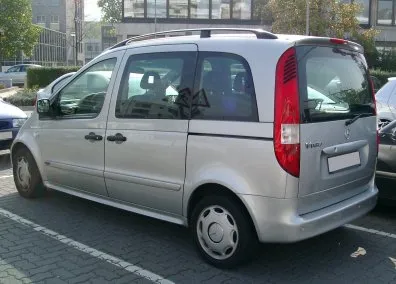
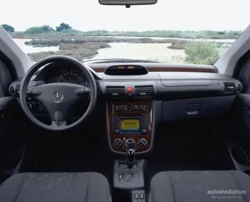
Abmessungen
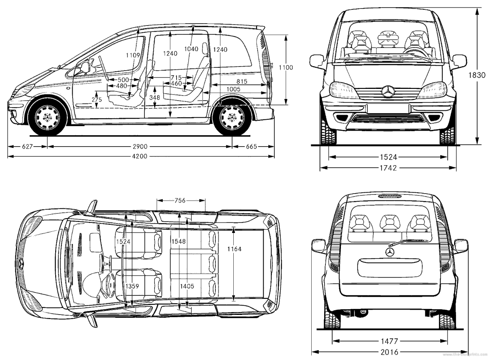
Die 1ste Citan
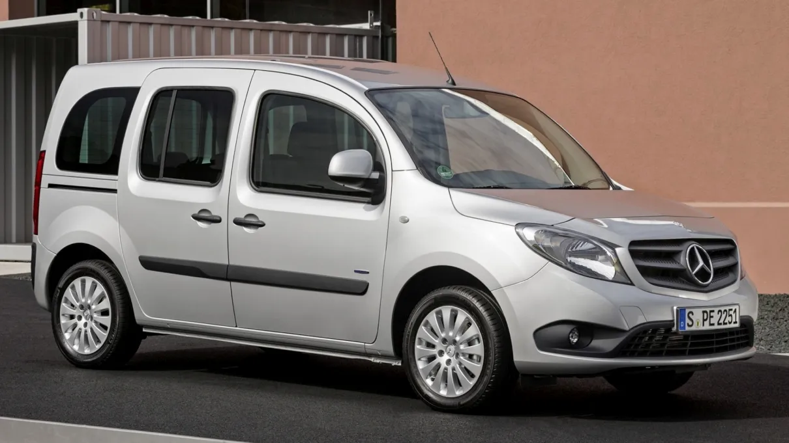
W415
Citan
09/2012 - 2021
Designer : Betrand Janssen , Gorden Wagener
kompakt
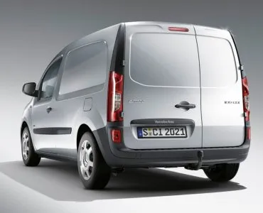
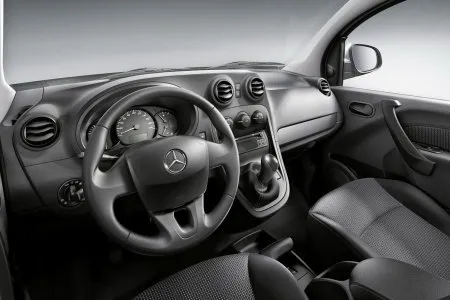
Lang
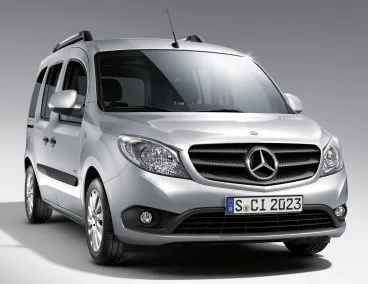
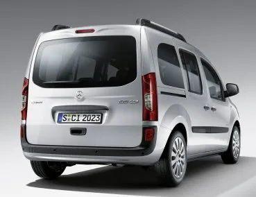
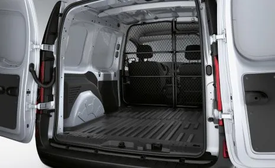
Extralang
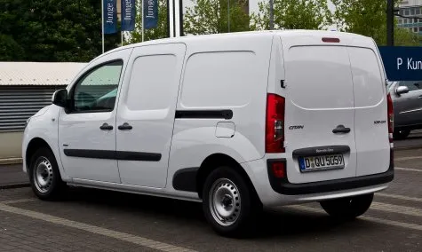
OEM
Renault Kangoo II
2008
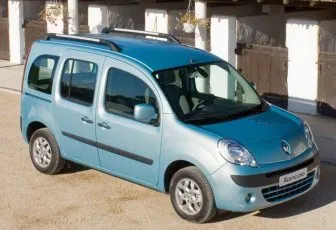
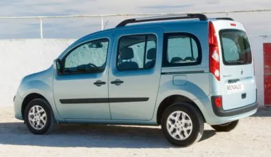
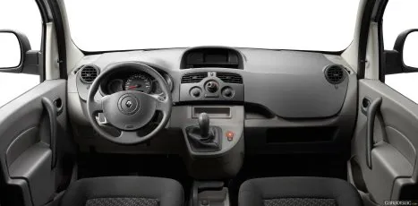
Dacia Dokker
2012
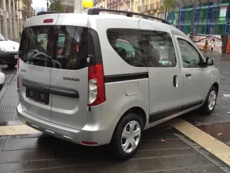
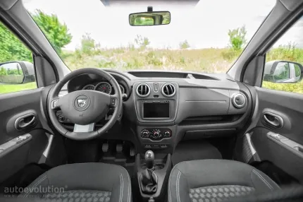
Der 2te Citan / T-klasse
W420
Citan
2021 -
Designer : Betrand Janssen , Gordon Schlie , Frank Lecher , Gorden Wagener
Panel Van
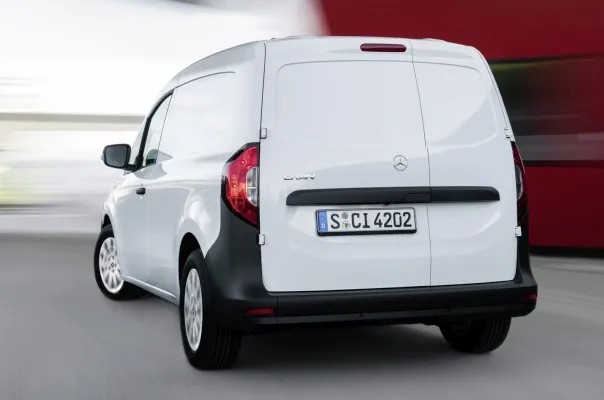
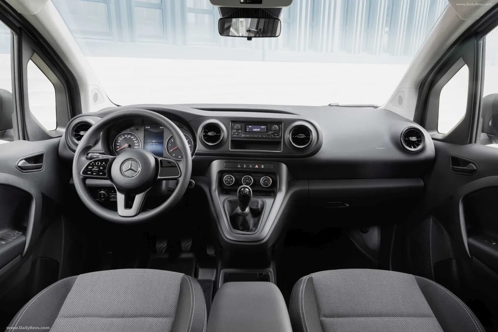
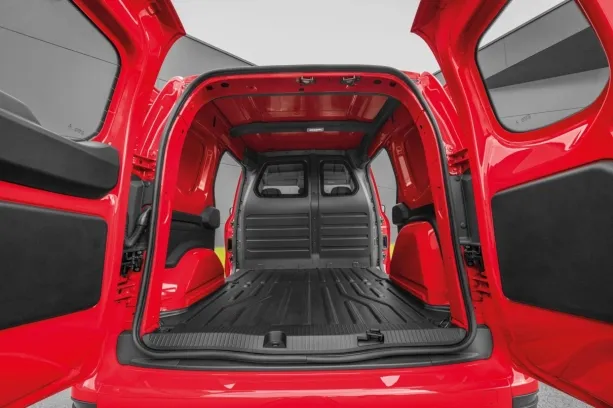
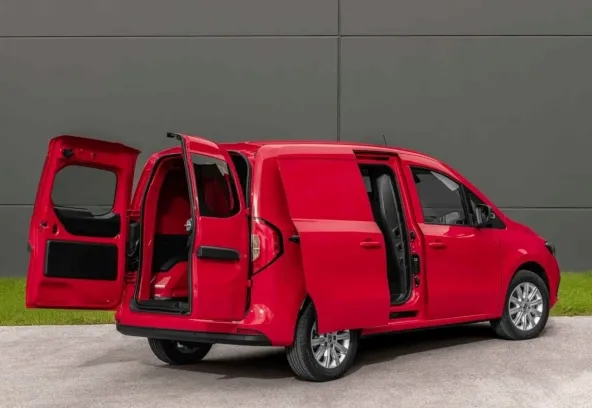
Abmessungen
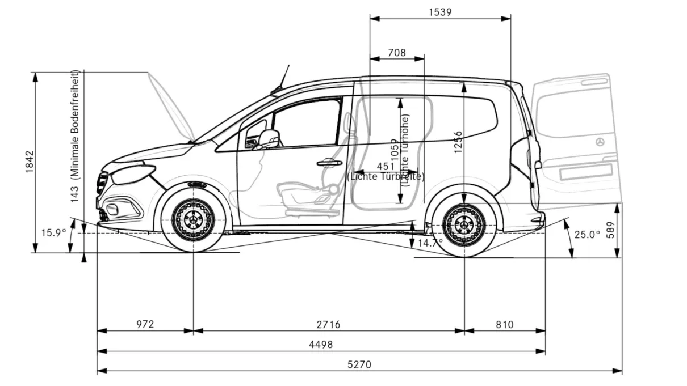
Tourer
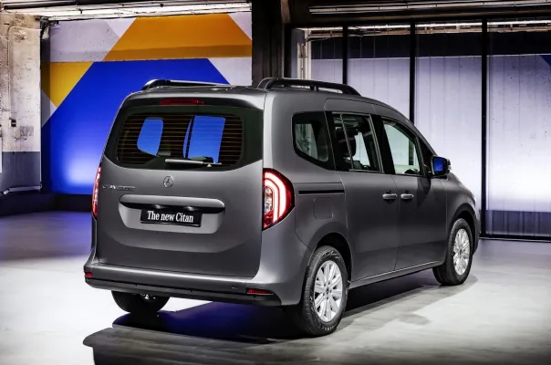
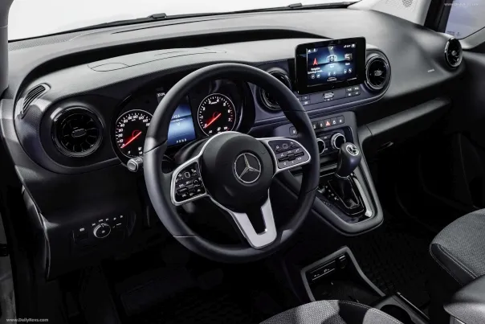
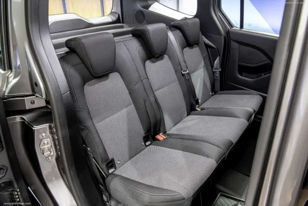
T-klasse
2022 -
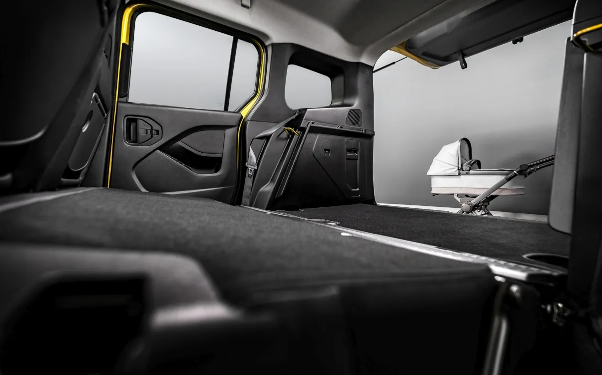
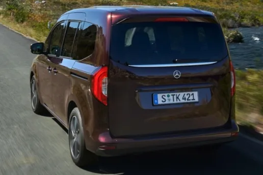
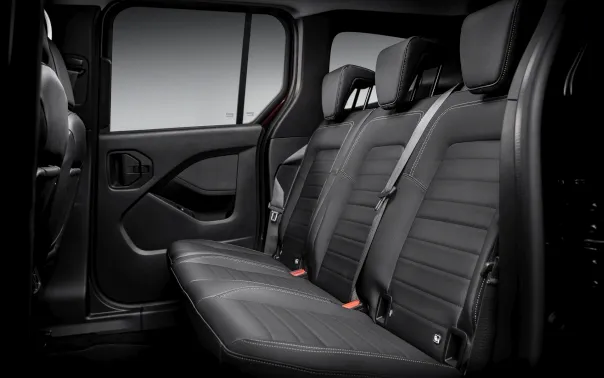
OEM
Renault Kangoo III
2021 -
▲
▶


{kind=link}
{kind=link}
{kind=link}
{kind=link}
{kind=link}
{kind=link}
{kind=link}
{kind=link}
{kind=link}
{kind=link}
{kind=link}
{kind=link}
{kind=link}
{kind=link}
{kind=link}
{kind=link}
{kind=link}
{kind=link}
{kind=link}
{kind=link}
{kind=link}
{kind=link}
{kind=link}
{kind=link}
{kind=link}
{kind=link}
{kind=link}
{kind=link}
{kind=link}
{kind=link}
{kind=link}
{kind=link}
{kind=link}
{kind=link}
{kind=link}
{kind=link}
{kind=link}